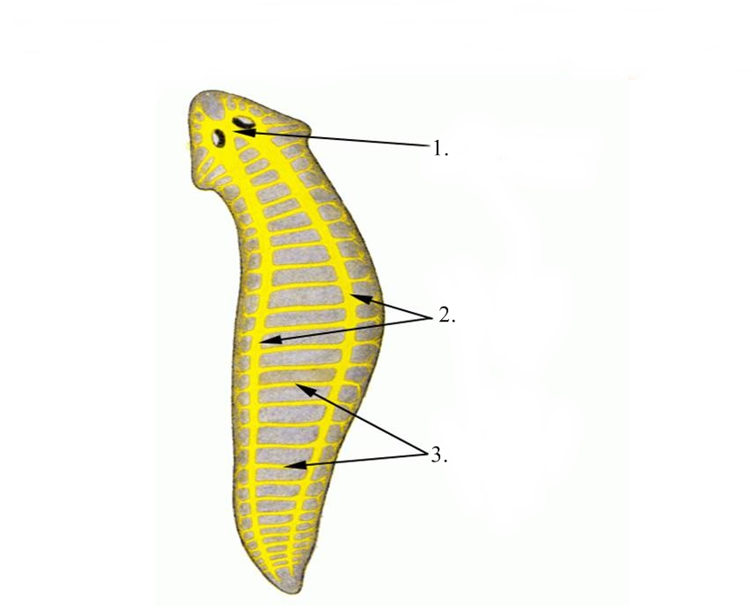

ФИЛОГЕНЕЗ НЕРВНОЙ СИСТЕМЫ
В процессе эволюции нервная система проходит три этапа своего развития: сетевидная нервная система, узловая и трубчатая.
Простейшие одноклеточные организмы не имеют нервной системы, и все реакции у них являются проявлением деятельности одной клетки.
Воздействия внешней среды многоклеточные организмы воспринимают наружными эктодермальными клетками. Такие клетки специализируются на восприятии раздражения, трансформации его в биоэлектрические потенциалы и проведении возбуждения. Из эктодермальных клеток, погружающихся в глубь тела, в последующем возникает примитивно устроенная нервная система многоклеточных организмов.
Самой простой формой является сетевидная нервная система. Она имеется у кишечнополостных, например, у гидры. У таких животных различают два вида клеток. Одни из них – рецепторные клетки – расположены между клетками эктодермы. Другие – эффекторные клетки – находятся в глубине организма. Раздражение любого участка поверхности тела гидры приводит к возбуждению глубжележащих клеток, в результате чего живой многоклеточный организм проявляет двигательную активность, захватывает пищу или уходит от противника.

Рис 1. Сетевидная нервная система гидры: 1 - восприятие раздражения, 2 - передача возбуждения от раздражения, 3 - ответ организма на раздражение.
Дальнейшая эволюция нервной системы характеризуется концентрацией нервных клеток, которые формируют нервные центры, или нервные узлы (ганглии), с отходящими от них нервными стволами. На этом этапе возникает узловая форма нервной системы. У представителей сегментированных животных (например, у кольчатых червей) узлы расположены вентральнее пищеварительной трубки и соединяются поперечными и продольными нервными стволами. От этих узлов отходят нервы, разветвления которых заканчиваются также в пределах данного сегмента. Посегментно расположенные ганглии служат рефлекторным центрами соответствующих сегментов тела у этих животных. Продольные нервные стволы соединяют друг с другом узлы разных сегментов на одной половине тела и образуют продольные брюшные цепочки. В головном конце тела, дорсальнее глотки, расположена одна пара более крупных надглоточных узлов, которая окологлоточным кольцом нервов соединяется первой парой узлов брюшной цепочки. Эти узлы развиты более других и являются прообразом головного мозга позвоночных животных. Такое сегментарное строение нервной системы позволяет при раздражении определенных участков поверхности тела животного не вовлекать в ответную реакцию все нервные клетки тела, а использовать только клетки данного сегмента.
Рис 2. Узловая нервная система плоских червей: 1 - головной нервный узел, 2 - продольные нервные стволы, 3 - поперечные нервные стволы.
У хордовых развитие нервной системы происходит принципиально иным способом. Эктодермальные клетки на дорзальной стороне зародыша погружаются внутрь и образуют трубку. Так возникает трубчатая нервная система. Строение нервной системы в виде нервной трубки характерно для всех представителей хордовых – от наиболее просто устроенных бесчерепных до млекопитающих животных и человека.
В соответствии с метамерностью тела хордовых животных единая трубчатая нервная система состоит из ряда однотипных повторяющихся структур, или сегментов. Отростки нейронов, входящих в состав данного нервного сегмента, разветвляются, как правило, в определенном, соответствующем данному сегменту участке тела и его мускулатуре.

Рис 3. Трубчатая нервная система рыб: 1 - головной мозг, 2 - спинной мозг, 3 - нервы.
Из туловищного отдела нервной трубки образуется спинной мозг. В спинном мозге и в стволовой части формирующегося головного мозга у хордовых в вентральных отделах нервной трубки располагаются «двигательные» клетки, аксоны которых формируют передние («двигательные») корешки, а в дорсальных – нервные клетки, с которыми вступают в связь аксоны «чувствительных» клеток, расположенных в спинномозговых узлах.
В головном конце нервной трубки в связи с развивающимися передних отделах туловища органами чувств и наличием здесь жаберного аппарата сегментарное строение нервной трубки хотя и сохраняется, однако претерпевает значительные изменения. Эти отделы нервной трубки являются зачатком, из которого развивается головной мозг. На ранних стадиях эмбриогенеза почти у всех черепных животных головной конец нервной трубки состоит из трех первичных нервных пузырьков: ромбовидного, rhombencephalon, расположенного ближе всех к спинному мозгу, среднего, mesencephalon, и переднего, prosencephalon.
Развитие головного мозга происходит параллельно с усовершенствованием спинного мозга, причем появление новых центров в головном мозге ставит как бы в подчиненное положение уже существующие центры спинного мозга. В тех участках головного мозга, которые относятся к заднему мозговому пузырю (ромбовидному мозгу), возникают центры, регулирующие процессы дыхания, пищеварения, кровообращения. Несомненное влияние на развитие заднего мозга оказывают появляющиеся уже низших рыб рецепторы статики и акустики. Появление и совершенствование рецепторов зрения и слуха обусловливают развитие среднего мозга, где закладываются центры, отвечающие за зрительную и слуховую функции. Все эти процессы происходят в связи с приспособляемостью организма животных к водной среде обитания.
При переходе животных к наземному образу жизни происходит дальнейшая перестройка как организма в целом, так и его нервной системы. Развитие обонятельного анализатора вызывает изменения переднего конца нервной трубки (переднего мозгового пузыря), где закладываются центры, регулирующие функцию обоняния, появляется так называемый обонятельный мозг.
Из трех первичных пузырей за счет дальнейшей дифференцировки выделяются следующие 5 отделов (мозговые пузыри): конечный мозг, telencephalon; промежуточный мозг, diencephalon; средний мозг, mesencephalon, задний мозг, metencephalon, и продолговатый мозг, medulla oblongata. Центральный канал спинного мозга в головном конце нервной трубки вращается в систему сообщающихся друг с другом полостей мозговых пузырей, получивших название желудочков головного мозга. Дальнейшее развитие нервной системы связано с прогрессивным развитием переднего мозга и возникновением новых нервных центров.
Более старые нервные центры, сформировавшиеся на ранних этапах эволюции, не исчезают, а сохраняются, занимая подчиненное положение по отношению к более новым. Так, наряду с впервые возникшими в заднем мозге центрами слуха (ядрами) на более поздних этапах центры слуха появляются в среднем, а затем и в конечном мозгу. Этот процесс получил название кортиколизации функций. Усиленное развитие конечного мозга у высших позвоночных животных (млекопитающих) приводит к тому, что этот отдел преобладает над всеми остальными. Конечный мозг снаружи покрывается слоем серого вещества – корой (cortex cerebralis). Кора в своем развитии тоже проходит три стадии: древняя, старая и новая кора. Эти три формации коры отличаются друг от друга по степени сложности.
Впервые примитивная кора появляется у рептилий. Она покрывает практически весь конечный мозг. На смену древней коре, paleocortex, а затем старой, archeocortex, приходит новая кора,neocortex.Старые отделы оттесняются на нижнюю (вентральную) поверхность полушарий и в глубину, как бы свертываются, превращаются в гиппокамп (аммонов рог) и в прилежащие к нему отделы мозга. У млекопитающих кора занимает большую часть поверхности полушарий, в ней происходят существенные структурные преобразования, формируется шесть клеточных слоев.
Наибольшего развития кора большого мозга достигает у человека, что объясняется трудовой деятельностью человека и возникновением речи как средства общения между людьми. Площадь поверхности коры головного мозга человека составляет около 220 тыс. мм2, что зависит от наличия большого количества борозд и извилин. Причем на выпуклые части извилин приходится менее 1/3, а на боковые и нижние стенки борозд – более 2/3 всей площади коры. У человека более 95 % коры – это новая кора.
В процессе эволюции не только происходит рост мозга и усложнение его строения, но и изменение соотношения отдельных долей. Особенного развития у человека достигают лобные доли, их поверхность составляет около 29 % всей поверхности коры, а масса – более 50% массы головного мозга.
Одновременно с этими процессами происходят дифференцировка и усложнение всех других отделов мозга, перестройка как восходящих, так и нисходящих путей. Так, у высших млекопитающих по сравнению с низшими нарастает масса волокон пирамидных путей, связывающих центры коры большого мозга с мотонейронами спинного мозга и двигательными ядрами стволовых отделов головного мозга. Увеличение массы волокон проводящих путей (в филогенезе) непосредственно связано с увеличением объема плаща и формированием коры большого мозга.
В процессе эволюции в связи с развитием высших центров управления деятельностью всего организма в головном мозге спинной мозг попадает в подчиненное положение. В нем сохранится более старый сегментарный аппарат собственных связей спинного мозга и развивается надсегментарный аппарат двусторонних связей с головным мозгом. Эволюция головного мозга проявилась в развитии и совершенствовании рецепторного аппарата, усовершенствовании механизмов приспособления организма к окружающей среде путем изменения обмена веществ, кортиколизации функций.